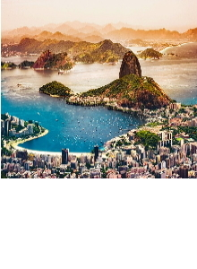
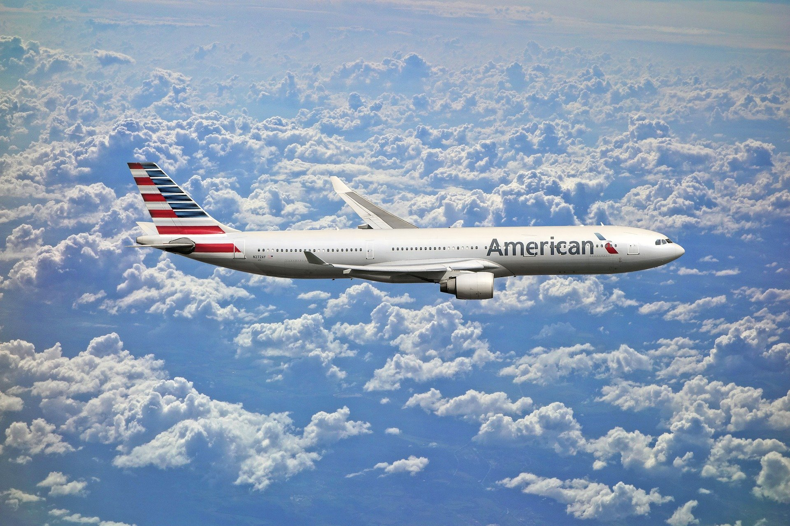
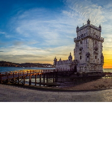
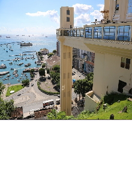
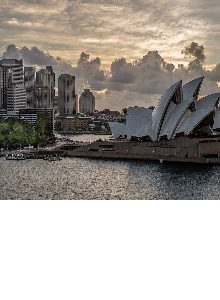

O próximo destino está mais perto
Encontre seu próximo ponto de partida.
Preencha a rota para ver como funcionaria uma busca de voos neste protótipo.
Inspire-se
Destinos populares
As imagens e sugestões abaixo são referências visuais; não indicam tarifas disponíveis.


